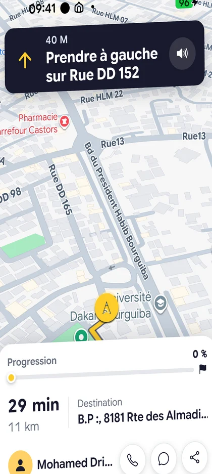

01
Silo
Plateforme de transport de personnes au Sénégal : réservation de trajets, suivi du chauffeur en temps réel, paiement mobile et programme de fidélité. Je suis cofondateur et je réalise toute la partie technique, des applications aux serveurs.
- Rôle
- Cofondateur, responsable technique
- Applications
- Passager, chauffeur, back-office, API
- Depuis
- 2025
